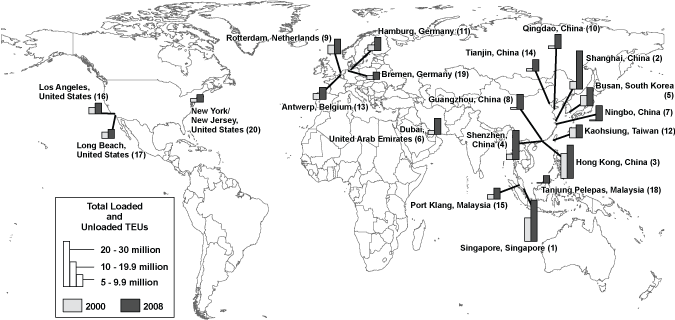

Excel | CSV | Table Version
(Thousands of loaded and unloaded TEUs)
KEY: TEUs = twenty-foot equivalent units. One 20-foot container equals one TEU, and one 40-foot container equals two TEUs.
SOURCES: 2000: U.S. Department of Transportation, Research and Innovative Technology Administration, Bureau of Transportation Statistics, based on U.S. Department of Transportation, Maritime Administration, 2008: Containerization International Online, www.ci-online.co.uk, as of March 17, 2009.